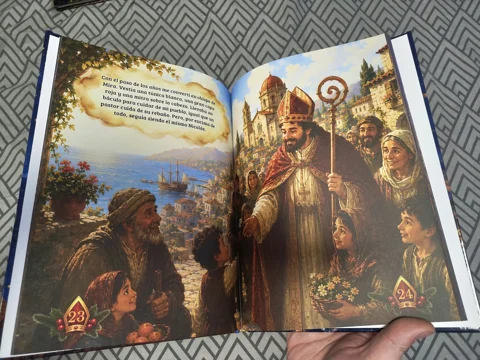
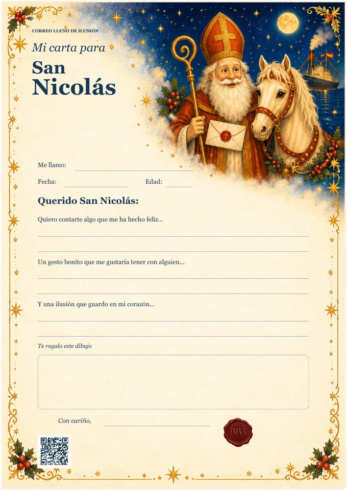
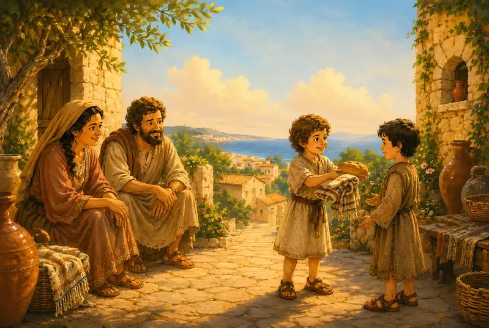
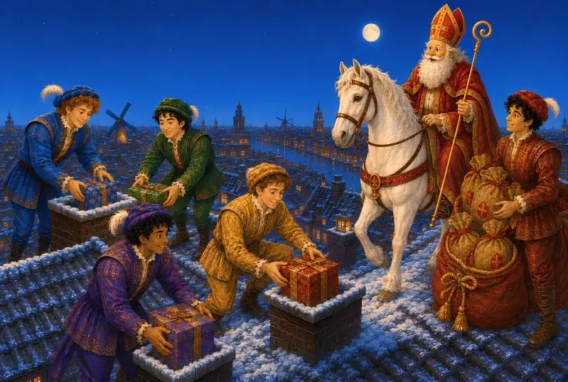
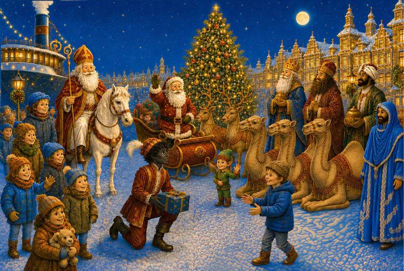

Edición física apaisada con ilustraciones a doble página.
Comprar tapa dura → Comprar la edición española en tapa dura
Comprar la edición española en tapa duraInicio › Mis libros › El origen de Papá Noel: San Nicolás
✦ Ya disponible
La historia que ocurrió antes de la leyenda
El origen de
Papá Noel:
San Nicolás
Antes del trineo, los regalos y el traje rojo, hubo un hombre, una leyenda y un viaje que transformó la Navidad para siempre.
Tapa dura: 91 páginas · Kindle: 46 páginas · Edición española.
De 4 a 12 añosDos formatosIlustraciones apaisadasLectura en familia
Ya disponible
Elige cómo quieres
descubrir la historia.
Compra la edición española en tapa dura o Kindle. El enlace se adapta para Amazon España o para tu tienda Amazon mediante el enlace universal.
Edición españolaTapa dura · Kindle
Cada doble página se presenta como una gran composición horizontal.
Leer en Kindle →Compra gestionada por AmazonEnlace de compra según tu paísInformación editorial verificable
Sobre el cuento
De San Nicolás
a Papá Noel.
El cuento parte de la figura de San Nicolás para acercar a los lectores al origen de una tradición que, con el paso del tiempo, inspiraría la imagen de Papá Noel.
A través de una aventura ilustrada, el libro habla de generosidad, ayuda a los demás y de cómo una historia puede viajar entre lugares y generaciones sin perder su magia.
De 4 a 12 años
Lectura compartida con un adulto para los pequeños; autónoma según su soltura lectora. También para curiosos de cualquier edad que disfruten los cuentos ilustrados.
Tapa dura: 21,59 × 27,94 cm (8,5 × 11 pulgadas)
Un regalo para descubrir juntos una tradición navideña.
Así son los libros
Toca una foto para ampliarla

Muestra real del libro
Descubre las primeras cinco páginas.
Abre una muestra con las cinco primeras páginas narrativas de la edición española, sin portada ni créditos.



Un regalo para imaginar en familia
Una carta para San Nicolás.
Comparte una alegría, un gesto bonito y una ilusión. Escribe y dibuja tu carta para San Nicolás, con toda la magia de su historia.
Descárgala gratis, imprímela y hazla tuya.
PDF en español · A4 · 1 página · 0.9 MB
Al imprimir, elige «Ajustar a página». Sin registro.
Dentro del libro
Una edición creada
para leer y contemplar.
La composición visual forma parte de la narración y acompaña el viaje de San Nicolás en cada doble página.

01
Una historia de origen
Un viaje narrativo hacia la figura de San Nicolás y la tradición que acabaría dando forma a Papá Noel.

02
Ilustraciones apaisadas
Escenas a doble página llenas de personajes y detalles, disponibles tanto en tapa dura como en Kindle.

03
Valores para compartir
Generosidad, solidaridad y empatía acompañan una lectura pensada para niños y adultos.
Información editorial
Disponibilidad para librerías.
Información de distribución de la edición española en tapa dura.
Edición española en tapa dura — estado editorial en IngramSpark: «Title Available». Esto significa que esta edición concreta está disponible para que librerías y distribuidores puedan solicitarla a través de la red de IngramSpark; no implica que todas las librerías la tengan en stock. Puedes solicitarla en una librería facilitando el ISBN-13 de la edición.
- ISBN-13 · tapa dura española
- 9788409924981
- ISBN-10
- 8409924986
- Kindle · ASIN
- B0H98JJD4W
También en la colección
Descubre las otras historias
Dos cuentos ilustrados sobre tradición, empatía y personajes que dejan huella.